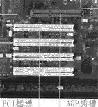
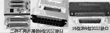
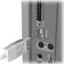

|
PC机从诞生以来就采用了总线结构方式和标准接口技术。先进的总线及接口技术，对于解决系统瓶颈和提高整个微机系统的性能，有着十分重要的影响，因此在PC机二十多年的发展过程中，总线结构及接口技术在不断地发展变化。
总线结构的类型
这里所说的总线主要是指系统总线。PC机的系统总线又可分为ISA、EISA、MCA、VESA、PCI、AGP等多种标准。
一、ISA/EISA/MCA/VESA总线
ISA(Industry Standard Architecture)是IBM公司为286/AT电脑制定的总线工业标准,也称为AT标准。ISA总线的影响力非常大，直到现在仍存在大量ISA设备，最新的主板也还为它保留了一席之地。MCA
(Micro Channel Architecture)是IBM公司专为PS/2系统开发的微通道总线结构。由于要求使用许可证，违背了PC发展开放的潮流，因此还未有效推广即告失败。
EISA(Extended Industry Standard Architecture)，是EISA集团(由Compaq、HP、AST等组成)专为32位CPU设计的总线扩展工业标准，向下兼容ISA，当年在高档台式机上得到一定应用。VESA(Video
Electronics Standards Association)，是VESA组织(由IBM、Compaq等发起，有120多家公司参加)按Local
Bus(局部总线)标准设计的一种开放性总线，但成本较高，只是适用于486的一种过渡标准，目前已经淘汰。
二、PCI总线
90年代后，随着图形处理技术和多媒体技术的广泛应用，在以Windows为代表的图形用户接口(GUI)进入PC机之后，要求PC具有高速的图形及I/O运算处理能力，这对总线的速度提出了挑战。原有的ISA、EISA总线已远远不能适应要求，成为整个系统的主要瓶颈。1991年下半年，Intel公司首先提出了PCI(Peripheral
Component Interconnect)的概念，并联合IBM、Compaq、AST、HP、等100多家公司成立了PCI集团。PCI是一种先进的局部总线，已成为局部总线的新标准，是目前应用最广泛的总线结构。
PCI总线是一种不依附于某个具体处理器的局部总线，从结构上看，PCI是在CPU和原来的系统总线之间插入的一级总线，需要时具体由一个桥接电路，实现对这一层的智能设备取得总线控制权，以加速数据传输管理。
三、AGP总线
虽然现在PC机的图形处理能力越来越强，但要完成细致的大型3D图形描绘，PCI总线结构的性能仍然有限。为了让PC的3D应用能力能同图形工作站相比，Intel公司开发了AGP(Accelerated
Graphics Port)标准，主要目的就是要大幅提高高档PC机的图形尤其是3D图形的处理能力。严格说来，AGP不能称为总线，因为它是点对点连接，即连接控制芯片和AGP显示卡。AGP在主内存与显示卡之间提供了一条直接的通道，使得3D图形数据越过PCI总线，直接送入显示子系统。这样就能突破由于PCI总线形成的系统瓶颈，从而达到高性能3D图形的描绘功能。PCI及AGP插槽外观见图1。
标准接口的类型
在微机系统中采用标准接口技术，其目的是为了便于模块结构设计,可以得到更多厂商的广泛支持，便于“生产”与之兼容的外部设备和软件。不同类型的外设需要不同的接口，不同的接口是不通用的。以前在8086/286机器上存在过的ST506和ESDI等接口标准都已经淘汰,目前在微机中使用最广泛的接口是：IDE、EIDE、SCSI、USB和IEEE
1394五种。
一、 IDE/EIDE接口
IDE的原文是Integrated Device Electronics,即集成设备电子部件。它是由Compaq开发并由Western
Digital公司生产的控制器接口。IDE采用了40线的单组电缆连接。由于把控制器集成到驱动器之中,适配卡已变得十分简单,现在的微机系统中已不再使用适配卡，而把适配电路集成到系统主板上,并留有专门的IDE连接器插口。IDE由于具有多种优点,且成本低廉,在个人微机系统中得到了广泛的应用。
增强型IDE (Enhanced IDE)是Western Digital为取代IDE而开发的接口标准。在采用EIDE接口的微机系统中,EIDE接口已直接集成在主板上,因此不必再购买单独的适配卡。与IDE相比,EIDE具有支持大容量硬盘、可连接四台EIDE设备、有更高数据传输速率（13.3MB/s以上）等几方面的特点。为了支持大容量硬盘，EIDE支持三种硬盘工作模式：NORMAL、LBA和LARGE模式。
二、Ultra DMA33和Ultra DMA66接口
在ATA－2标准推出之后，SFFC又推出了ATA－3标准。ATA－3标准的主要特点是提高了ATA－2的安全性和可靠性。ATA－3本身并没有定义更高的传输模式。此外，ATA标准本身只支持硬盘，为此SFFC将推出ATA－4标准，该标准将集成ATA－3和ATAPI并且支持更高的传输模式。在ATA－4标准没有正式推出之前，作为一个过渡性的标准,Quantum和Intel推出了Ultra
ATA(Ultra DMA)标准。
Ultra ATA的第一个标准是Ultra DMA33(简称UDMA33)，也有人把它称为ATA－3。符合该标准的主板和硬盘早在1997年便已经投放市场，目前几乎所有的主板及硬盘都支持该标准。
Ultra ATA的第二个标准是Ultra DMA66（或者Ultra ATA－66）是由Quantum和Intel在1998年2月份提出的最新标准。Ultra
DMA66进一步提高了数据传输率，突发数据传输率理论上可达66.6MB/s。并且采用了新型的CRC循环冗余校验，进一步提高了数据传输的可靠性，改用80针的排线(保留了与现有的电脑兼容的40针排线，增加了40条地线)，以保证在高速数据传输中降低相邻信号线间的干扰。
目前，有Intel 810、VIA Apollo Pro等芯片组提供了对Ultra DMA66硬盘的支持。部分主板也提供了支持Ultra
DMA66硬盘的接口。而新出的大部分硬盘都支持Ultra DMA－66接口。
三、SCSI接口
SCSI的原文是Small Computer System Interface,即小型计算机系统接口。SCSI也是系统级接口(外观如图2),可与各种采用SCSI接口标准的外部设备相连,如硬盘驱动器、扫描仪、光驱、打印机和磁带驱动器等。采用SCSI标准的这些外设本身必须配有相应的外设控制器。SCSI接口早期只在小型机上使用,近年来也在PC机中广泛采用。
最新的Ultra3 SCSI的Ultra160/m接口标准，进一步把数据传输率提高到160MB/s。昆腾也在1998年11月推出了第一个支持Ultra160/m接口标准的硬盘Atlas10K和Atlas四代。SCSI对PC来说应是一种很好的配置,它不仅是一个接口,更是一条总线。相信随着技术的进一步发展，SCSI也会像EIDE一样广泛应用在微机系统和外设中。
四、USB接口
USB(Universal Serial Bus)接口(外观如图3)的提出是基于采用通用连接技术，实现外设的简单快速连接，达到方 便用户、降低成本、扩展PC机连接外设的范围的目的。目前PC中似乎每个设备都有它自己的一套连接设备。外设接口的规格不一、有限的接口数量，已无法满足众多外设连接的迫切需要。解决这一问题的关键是，提供设备的共享接口来解决个人计算机与周边设备
的通用连接。
USB技术应用是计算机外设连接技术的重大变革。现在USB接口标准属于中低速的界面传输，面向家庭与小型办公领域的中低速设备。比如键盘、鼠标、游戏杆、
显示器、数字音箱、数字相机以及Modem等，目的是在统一的USB接口上实现中低速外设的通用连接。PC主机上只需要一个USB端口，其他的连接可以通过USB接口和USB集线器在桌面上完成。USB系统由USB主机（HOST）、集线器（HUB）、连接电缆、USB外设组成。下一代的USB接口，
数据传输率将提高到120Mbps～240Mbps，并支持宽带宽数字摄像设备及新型扫描仪、打印机及存储设备。
五、IEEE 1394接口
IEEE
1394是一种串行接口标准，这种接口标准允许把电脑、电脑外部设备、各种家电非常简单地连接在一起。从IEEE 1394可以连接多种不同外设的功能特点来看，也可以称为总线，即一种连接外部设备的机外总线。IEEE
1394的原型是运行在Apple Mac电脑上的Fire Wire(火线)，由IEEE采用并且重新进行了规范。它定义了数据的传输协定及连接系统，可用较低的成本达到较高的性能，以增强电脑与外设如硬盘、打印机、扫描仪，与消费性电子产品如数码相机、DVD播放机、视频电话等的连接能力。由于要求相应的外部设备也具有IEEE
1394接口功能才能连接到1394总线上，所以，直到1995年第3季度Sony推出的数码摄像机加上了IEEE 1394接口后，IEEE 1394才真正引起了广泛的注意。
六、Device Bay
Device Bay是由Microsoft、Intel和Compaq公司共同开发的标准，这一技术可让所有设备协同运作，包括CD－ROM、DVD－ROM、磁带、硬盘驱动器以及各种符合IEEE
1394的设备。
由于Device Bay技术能够处理类型广泛的设备，所以它可创建一种新PC：主板将仅包括CPU，所有驱动器和设备都在外部与计算机相连，并包括所有数字家电，例如电视和电话。
尽管Device Bay的规范已于1997年制定完毕，但由于这一技术研发经费开销过高，因此很可能会搁浅。迄今Microsoft还没有准备在未来的操作系统中，支持DeviceBay的具体计划。
（月生）
|